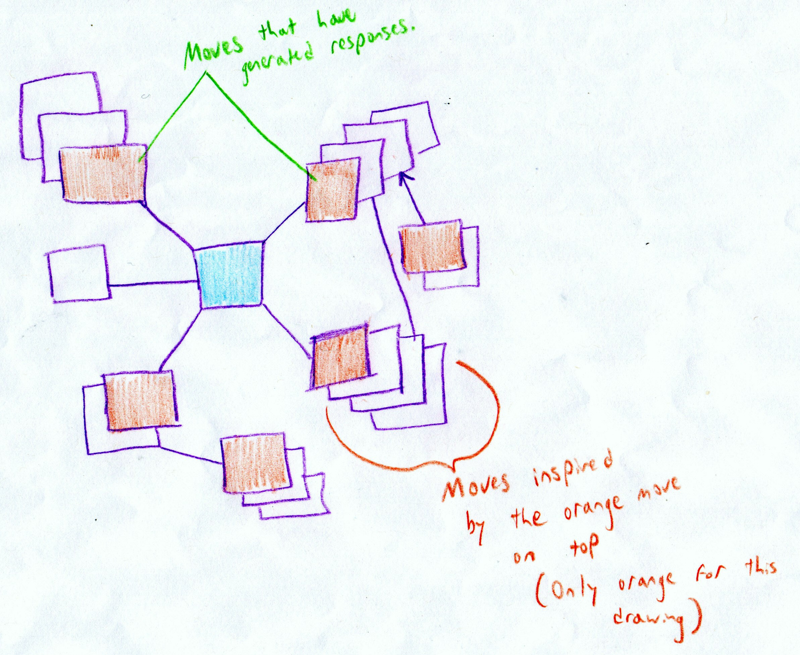

Future Directions
Like the SpecLab before us, we too came up with various ideas for visualizing the complex move networks which could result from Ivanhoe game play. Below we have sketched out one way of visualizing these networks which we would love to see incorporated one day as a feature of our game.
In this visualization, moves which generate other moves have their responses stacked behind them. Thus, in order for a move to have its own display space, it must trigger more critical game play by other players. This design idea immediately shows which moves have been more generative. It also has the potential to inspire more provocative moves, and more heated, energetic interchanges. (Whether this is a desireable thing or not, I leave to Ivanhoe players to decide.)
Another visualization idea we had was to display moves in a timeline, with moves which triggered more responses growing in prominence. Such a feature would show the temporal development of the game--when more activity took place. For instance, if an Ivanhoe game were being played during Presidential elections, did the elections have an impact on gameplay? This question could easily be examined by looking to see how many moves were made in proximity to that particular date.
Another idea which developed in the course of thinking about Ivanhoe back in the fall was the notion of building Ivanhoe and Prism, the project of the last two Praxis cohorts, together. The idea was to use text markup code from Prism, and link such markup to Ivanhoe moves, as in the very bare-bones image below:
Users playing a game on A Turn of the Screw, for instance, could actually tag the text and directly associate their move commentary with a portion of the text. Or--to invoke a classic debate of this particular work--users could highlight portions of the text where the governess appears crazy or where the existence of ghosts seems apparent, and then comment in their Ivanhoe move fields on why they made their highlighting choices.
Still, as the Prism cohort mentioned in their own "Future Directions" page, this method of textual analysis need not be restricted to texts. In the spirit of interdisciplinarity, our cohort, too, wishes to include all types of media. Thus, cohorts building Prism and Ivanhoe together could develop a method of marking up images and associating moves with those portions of the image.
Such technology could even extend to tagging classifications or Ivanhoe moves with timeframes in a video or sound file; the possibilities are endless. It simply takes intrepid Praxers and patient SLab mentors to ply their talents and enthusiasm. Good luck, future cohorts! We hope you and all our users enjoy the Ivanhoe Game WP Theme.